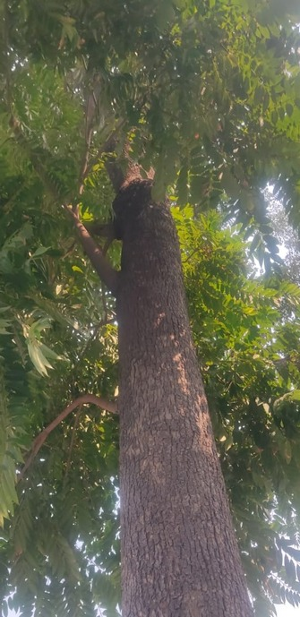

LEVELS OF DIVERSITY IN LPU CAMPUS
GENETIC DIVERSITY
Genetic diversity is defined as genetic variability present within species. LPU Genetic diversity is the product of recombination of genetic material in the process of inheritance. It changes with time and space. Sexual reproduction is important in maintaining genetic diversity as it gives unique offspring by combining genes of parents. In LPU having four different breeds of dogs namely, Indian pariah dog, Kanni dog, Kombai dog, Aspin dog. Different varieties of flowers namely, Roses, Hibiscus, paper flower, wax mallow hibiscus, etc.
FIELD WORK
1. The Biodiversity is Quite diverse in LPU
2. Many Plants shed their leaves and some flowers such
as Roses start to Bloom during the fall season.
3. There are two head managers in LPU named RAM and
Ashwani who manage the Biodiversity in LPU.
4. There might not be as many animals as plants but
mainly dogs reside in the campus

WHAT AND HOW WE LEARNT
1. Some of the plants may look the same; they are of different species.
2. The plants need to be shaped up so that they don’t overgrow.
3. Some of the pigeons are actually fed by the university campus.
4. There is a nursery where some of the beautiful flowers and plants are cared for.
GENETIC BREEDS OF DOG
Explore the diverse genetic breeds of dogs found in LPU. Learn about their unique characteristics and contributions to the biodiversity of the campus.
VARIETY OF FLOWERS
Discover the wide array of flowers that adorn the LPU campus. Explore the unique beauty and characteristics of each flower species.

CONSTITUENTS OF SPECIES DIVERSITY IN LPU
SPECIES RICHNESS
Number of different species present in an
ecosystem .
LPU has greater species richness as the
environment is conducive for a large number of
species.
E.g- pigeons, parrot, etc.
SPECIES RICHNESS
SPECIES EVENNESS
Explore the balance of species within the LPU ecosystem. Learn about the even distribution of different species and its impact on ecological stability.
SPECIES EVENNESS
Discover the even distribution of different species within the LPU ecosystem. Explore how species evenness contributes to the ecological balance of the campus.
PLANT BIODIVERSITY IN LPU CAMPUS
LPU is bestowed with a rich variety of plant species including
Pteridophytes, Gymnosperms, and Angiosperms.
There are over 1000 types of plants in LPU, and new ones are
planted every year.
LPU is famous for its wide variety of roses, and color
from white, off-white, pink, purple, magenta, red.
And in
addition to that, it has different shapes and sizes like tiny cute
little which occur in clusters.
I have found different varieties of palm trees in the LPU campus.
As
far as the tree species are concerned, we have found Devil’s tree,
Mango tree, banyan tree, Peepal tree, and other ornamental
plant species as well, creating a breathtaking environmental
and an educational environment for the students.
PLANT BIODIVERSITY IN LPU
Explore the diverse world of plants within the LPU campus. Learn about the unique characteristics and ecological roles of different plant species.
CONCLUSION
We have learned so many new things from this project
Most biodiversity resources are consumed by humans, so it is their primary
responsibility to preserve and protect biodiversity to protect the earth. The
richness of the species, the environment and the sustainable growth of life on
earth is important. It is the need of time to enforce strong legislative obligation
to prevent the illegal hunting of rear species.
The biodiversity of the LPU Campus enables activities like nature
photography, bird watching.